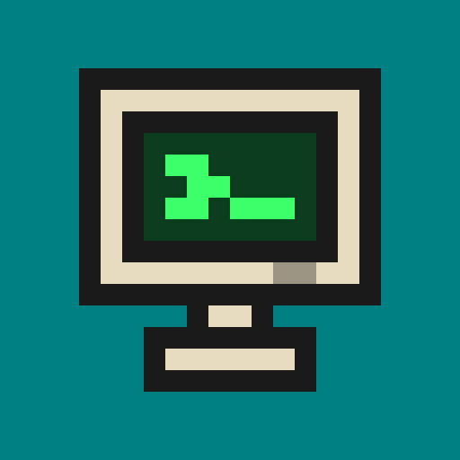
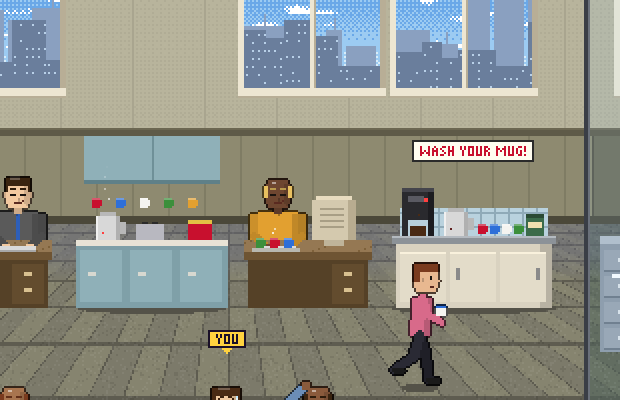
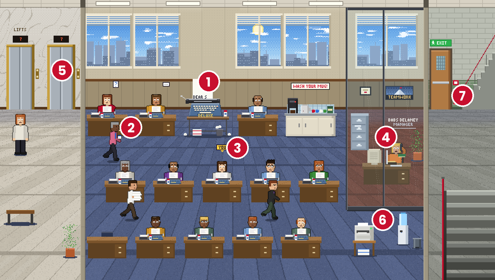
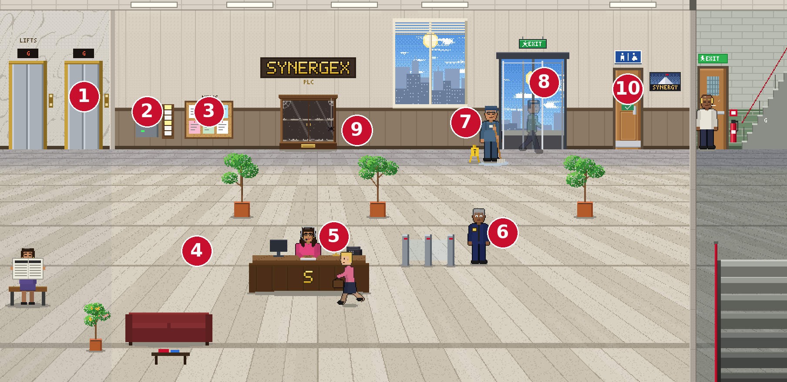

Il manuale del dipendente
1. Le basi
Inizi come Ragazzo in stage a preparare il tè nella cucina del seminterrato di Synergex plc. Ogni piano del grattacielo di 30 piani ha il suo lavoro: un macchinario o una scrivania che opera a tempo e paga ogni volta che completa il ciclo. Il tuo scopo è guadagnare, acquistare miglioramenti ed essere promosso fino all’ultimo piano.

Il tuo primo lavoro: preparare il tè. Toccalo per velocizzare il giro.
- I lavori guadagnano da soli. Una volta avviato, un lavoro continua a operare, anche ad app chiusa.
- Aumenta di livello i lavori per guadagnare di più e riempire le scrivanie di colleghi.
- Riempi la barra dei Kudos d’ufficio in cima allo schermo e toccala per chiedere una promozione.
- Ogni promozione moltiplica tutti i tuoi guadagni, e ogni poche promozioni sali di un piano verso un nuovo lavoro.
Il tuo primo giorno, Brenda delle Risorse Umane ti mostrerà l’ufficio per farti imparare sul campo.
Puoi saltare qualsiasi scena con Salta in alto a destra, e anche il tour. In entrambi i casi il gioco ti chiede conferma.
2. Synbux, Kudos d’ufficio e graffette dorate
| Valuta | A cosa serve |
|---|---|
| Guadagnati a ogni ciclo completato. Spendili per aumentare i livelli dei lavori e comprare strumenti. | |
| Kudos d’ufficio | Guadagnati a ogni ciclo completato. Non si spendono mai: riempi la barra per sbloccare la promozione successiva. |
| Graffette dorate | La valuta premium. Ottenute tramite promozioni, sfide, il cartellino delle presenze, eventi e video pubblicitari, oppure acquistate nel Negozio. Usale per boost, salti temporali e strumenti premium. |
3. Muoversi in ufficio
La schermata principale mostra un piano della torre visto di profilo. Trascina a sinistra e a destra per camminare lungo il piano e pizzica per lo zoom. Quasi tutto può essere toccato.

- Il lavoro del piano. Toccalo per affrettarlo. La targhetta in basso mostra il suo livello, i guadagni e il pulsante Livello su.
- I tuoi colleghi. Le scrivanie si popolano all’aumentare del livello del lavoro. Tocca chiunque per una battuta.
- La tua scrivania (contrassegnata da TU) si trova al piano a cui sei stato promosso.
- L’ufficio del capo. Tocca il capo per scoprire cosa ne pensa.
- Gli ascensori. Tocca un ascensore per aprire la pulsantiera e viaggiare verso qualsiasi piano raggiunto.
- La fotocopiatrice e il boccione d’acqua. Toccali per una sorpresa.
- La scala antincendio. Tieni d’occhio le scale: la gente va e viene.
Il pulsante della mappa nella barra in alto (la torretta) mostra l’intero edificio: i piani sbloccati, dove si trova la tua scrivania e chi gestisce ogni piano.
Scorri su e giù per guardare sopra e sotto il piano: il controsoffitto (e il tetto, all’ultimo piano) e il piano di sotto.
La giornata segue l’orologio del telefono: alba dalle 6, tramonto dalle 17. Dalle 19 si accendono le lampade da scrivania, il personale delle pulizie fa il giro e alcune notti piove.
4. L’atrio
Il piano terra è l’atrio, e il gioco si apre qui ogni volta che lo avvii. Tocca ↩ MIA SCRIVANIA in alto per salire al tuo piano, oppure prendi l’ascensore.

- Gli ascensori per risalire verso gli uffici.
- La timbratrice. Toccala per visualizzare il cartellino e la tua serie (vedi Timbrare).
- La bacheca. L’evento in corso, o in arrivo, è appeso in alto: toccalo per l’evento. Sotto ci sono i tuoi obiettivi e le classifiche (vedi Obiettivi e classifiche), poi i soliti avvisi d’ufficio.
- Il poster «Evento in arrivo!». Compare sette giorni prima dell’inizio di un evento. Toccalo per vedere le novità in arrivo.
- Maxine alla reception, sempre al telefono. Quando ha novità dal capo, la telecamera si gira verso di lei: toccala per sentirle. È lei a consegnarti i trofei. Una volta alla settimana le servirà anche aiuto per ritrovare degli oggetti smarriti (vedi Oggetti smarriti).
- Ron della sicurezza. Saluta con la mano.
- Stan il custode. Toccalo per Info: versione dell’app, novità e licenze. Qualche giorno dopo il tuo arrivo, potrebbe volerti parlare in privato (vedi La caccia ai topi di Stan).
- L’ingresso. I visitatori entrano dalla porta girevole.
- La bacheca dei trofei. Toccala per guardare dentro (vedi Trofei).
5. Lavori e livelli
- Avvia un lavoro acquistando il suo primo livello, poi aumentalo di livello con i Synbux. Ogni livello rende di più.
- Ai livelli 10, 25, 50, 100 e successivi, il lavoro opera al doppio della velocità.
- Tocca un lavoro per mettergli fretta. Ogni tocco accelera il ciclo corrente e i guadagni salgono in lettere dorate.
- Sovraccarico d’ufficio. Tocca a raffica e comparirà l’indicatore di Sovraccarico a sinistra. Più si scalda, più vale ogni tocco (fino a x2,5) e più l’ufficio va nel panico. Se lo riempi, il piano entra in crisi totale per alcuni secondi: caos assoluto e ogni tocco vale il triplo (x3). Poi tutti avranno bisogno di un attimo di calma prima che possa riempirsi di nuovo.
- Nella finestra Mansioni puoi comprare 1 livello, 10 livelli o il MAX (tutti quelli che puoi permetterti) in una volta sola.
6. Promozioni e piani

- Ci sono 150 promozioni, cinque su ciascuno dei 30 piani.
- Quando la barra dei Kudos d’ufficio è piena, lampeggia: toccala per chiedere una promozione.
- Ogni promozione moltiplica tutti i Synbux (×1,10) e tutti i Kudos d’ufficio (×1,06).
- La prima promozione di ogni piano sposta la tua scrivania al piano superiore, sblocca il lavoro di quel piano e regala graffette dorate. Un nuovo responsabile si presenterà.
- La 2ª e la 4ª promozione di un piano ne sbloccano gli strumenti.
- Il tuo abbigliamento si fa più elegante man mano che scali la gerarchia.
I piani vanno dal Supporto (tè, posta, fotocopie), passando per Amministrazione, IT e Manutenzione, Gestione e Dirigenza, fino ai Piani Esecutivi: fusioni, golf e, in cima a tutto, Gestire l’impero.
7. Mansioni, Strumenti, Carriera e Negozio
I quattro pulsanti in basso aprono le finestre sovrapposte all’ufficio:
| Button | What's inside |
|---|---|
| Tutti i tuoi lavori: livelli, guadagni, il prossimo traguardo di velocità e acquisto cumulativo di livelli. | |
| Miglioramenti una tantum. Ogni piano ne ha due (uno triplica la paga, uno raddoppia la velocità), oltre a strumenti aziendali per velocità, paga, Kudos e tempo di assenza prolungato, nonché strumenti premium con graffette. Se ti mancano Synbux, Paga ora versa tutti i tuoi Synbux e copre il resto con le graffette. | |
| Ogni grado aziendale, i Kudos d’ufficio necessari per ciascuno e le graffette dorate che riconosce. | |
| Negozio | Offerte del giorno, omaggi gratuiti (pubblicità), VIP, pacchetti di graffette e vantaggi utili: Straordinari (doppia velocità per 30 min) e salti temporali (Pausa pranzo lunga 1 ora, Mezza giornata 4 ore, Festa aziendale 24 ore di paga subito). |
8. Mentre sei via
- Il tuo team continua a lavorare mentre l’app è chiusa, fino al limite del tuo tempo di assenza: 3 ore all’inizio, fino a 24 ore con gli strumenti, più 4 ore extra per i VIP.
- Al tuo ritorno, la scheda Di nuovo in ufficio mostra quanto hai guadagnato. Tocca Incassa, oppure Raddoppia guardando un breve video (i VIP raddoppiano subito).
- Esaurito il tempo di assenza, il lavoro si ferma fino al tuo ritorno. Un promemoria ti avviserà quando la vaschetta della posta è piena (attivabile in Impostazioni).
- Sei stato via una settimana o più? Ti aspetta un regalo di bentornato: 10 graffette dorate e una pausa caffè di 30 minuti.
- Schermo sempre attivo (in Impostazioni) impedisce al telefono di spegnersi a gioco aperto, permettendoti di ammirare l’ufficio in piena attività.
- Premendo Indietro ti verrà chiesto se vuoi timbrare l’uscita. Timbrare l’uscita salva la partita (anche sul cloud se connesso) prima che lo schermo si spenga.
9. Timbrare ogni giorno
Tocca la timbratrice nell’atrio (compare anche al tuo primo accesso giornaliero) per ritirare la tua ricompensa di presenza. Il cartellino copre sette giorni e i premi crescono nel corso della settimana:
| Giorno | Ricompensa |
|---|---|
| 1 | |
| 2 | 30 minuti di Kudos d’ufficio |
| 3 | |
| 4 | 1 ora di Kudos d’ufficio |
| 5 | |
| 6 | 2 ore di Kudos d’ufficio |
| 7 | 5 graffette dorate |
- Bonus per serie settimanale: ogni settimana completa consecutiva aggiunge +5% ai premi in Synbux e Kudos, fino a un massimo di +25%. I giorni 8–14 ricevono +5%, i giorni 15–21 +10%, e così via. Le graffette rimangono costanti. Il cartellino mostra la serie e il bonus attuale.
- Hai saltato un giorno? Se hai mancato fino a due giorni, puoi salvare la serie guardando una pubblicità (gratis per i VIP), oppure ricominciare dal giorno 1.
- Un promemoria alle 18:30 ti avvisa se la ricompensa di oggi ti sta ancora aspettando.
10. Sfide
Ci sono 50 sfide, presentate una alla volta tramite il pulsante # sulla destra dello schermo. La barra si riempie man mano e lampeggia con la scritta RISCATTA! al compimento. Ciascuna premia con graffette dorate (da 3 fino a 25 graffette). Ti orientano verso funzioni che potresti non aver ancora esplorato: l’ascensore, la mappa, le pause caffè o gli strumenti. Le sfide più avanzate richiedono giorni o settimane.
11. La caccia ai topi di Stan
Qualche giorno dopo il tuo arrivo, Stan il custode ti chiama nell’atrio: la direzione ha un problema di topi che preferirebbe tenere nascosto.
- Prendi 100 topi toccandoli mentre attraversano il piano che stai guardando. Escono soprattutto la sera e di notte.
- Tocca Stan quando vuoi per vedere quanti ne hai presi.
- Li hai presi tutti? Vai da Stan per 30 graffette dorate e il trofeo del Topo d’oro.
12. Inceppamenti della fotocopiatrice
Ogni tanto, mentre guardi un piano, la sua stampante si inceppa: trema, fuma, lampeggia di rosso e grida BLOCCO! Se è fuori vista, la telecamera ci si sposta, e un cartellino BLOCCO! con una freccia ti indica la strada.
- Tocca la stampante per aprirla. Hai 10 secondi per aprire lo sportello indicato dal piccolo display (A, B o C), tirare fuori il foglio accartocciato e richiudere. Lo sportello sbagliato ti costa un secondo.
- Riparala in tempo e il lavoro di quel piano va al doppio della velocità per 5 minuti. Se il tempo scade, non perdi nulla.
- Se la lasci stare, dopo un paio di minuti qualcuno le dà un calcio. Ci sono fino a tre inceppamenti al giorno.
13. Trova lo scansafatiche
Ogni tanto il capo di un piano ti fa cenno: qualcuno sul piano sta battendo la fiacca. Tocca il capo per iniziare a cercare.
- Hai 30 secondi e un indizio. Lo scansafatiche potrebbe dormire alla scrivania, nascondersi dietro un giornale, giocare col telefono o nascondersi sotto una scrivania vuota. Guarda bene: è un dettaglio.
- Toccalo per beccarlo. Toccare qualcuno che lavora davvero ti costa 3 secondi.
- Beccalo e il capo ti dà Kudos d’ufficio, di più se sei veloce. Fino a due volte al giorno.
14. Prove antincendio
Una volta al giorno i servizi generali fissano una prova antincendio tra le 10 e le 15. Una nota ti dice l’ora, e il telefono ti avvisa 15 minuti prima e di nuovo quando scatta l’allarme (se hai i promemoria attivi).
- Fatti trovare al piano della prova del giorno nelle due ore successive e scatta l’allarme: tutti nel panico. Quel piano è un piano al completo (tutte le scrivanie occupate, più il capo) scelto a caso, perché solo un piano al completo può registrare un tempo nella classifica Addetto antincendio; finché non ne hai uno, è il tuo piano, che tiene comunque il suo record. Ovunque tu sia, un pulsante PROVA lampeggiante ti ci porta.
- Tocca ogni persona per mandarla verso l’uscita di sicurezza prima che scada il tempo. Scorri il piano per raggiungere tutti. Ad alcuni va detto due volte, e al capo sempre.
- Guadagni Synbux per ogni persona uscita, più un bonus se escono tutti. Ogni piano tiene il suo tempo record. Se perdi l’ora, niente prova e nessun danno.
15. Gli oggetti smarriti di Maxine
Dopo la tua prima settimana in Synergex, ogni lunedì Maxine ha bisogno di una mano: qualcuno ha perso le sue cose per l’edificio. Una notifica alle 9:30 ti avvisa che è iniziata una nuova ricerca.
- Tocca Maxine quando ti fa cenno per sapere di chi sono le cose. Non viene nascosto niente finché non l’hai ascoltata.
- Più piani hai aperto, più c’è da trovare: all’inizio una cosa sul tuo piano, poi fino a quattro sparse tra i piani, l’atrio e la cantina. Alcune si vedono solo scorrendo in su nel controsoffitto o in giù sotto il pavimento.
- Fai caso a qualche raro luccichio e tocca l’oggetto per raccoglierlo. La finestra CERCA a destra mostra cosa manca. All’inizio non ci sono indizi: l’ultimo giorno, tutto ciò che manca ancora ne riceve uno (un indizio sul tipo di posto) e luccica un po’ più spesso.
- Trova tutto entro giovedì alle 20, poi riportalo a Maxine per 5 graffette dorate. Se non riesci a passare subito da lei, ti tiene la ricompensa fino alla ricerca successiva. Quello che manca ancora giovedì sera finisce nel cestino.
- Ogni settimana arriva una storia nuova.
16. Trofei e la bacheca dei trofei

Il Topo d’oro nella bacheca dei trofei e sulla tua scrivania.
- Alcune imprese ti fanno vincere un trofeo, come il Topo d’oro per la caccia ai topi di Stan. Maxine, alla reception, te li consegna uno per uno con i ringraziamenti del capo.
- I nuovi trofei vengono esposti nella bacheca dei trofei dell’atrio. Toccala: le ante si aprono su tutti i tuoi trofei, con nome e data, ordinati per anno.
- Sulla scrivania ne stanno fino a tre: uno grande sul monitor e due piccoli davanti. Tocca un trofeo per scegliere Grande, Sinistra, Destra o Bacheca.
- Sotto, Da vincere: le sagome dei trofei che non hai ancora vinto. Toccane una per un indizio. Quando sei a metà strada si illumina e mostra a che punto sei. Un trofeo stagionale compare un mese prima del suo evento; se lo perdi, ti aspetta l’anno dopo. Solo i trofei vinti tolgono la polvere.
- La bacheca prende polvere da anni. Più trofei contiene, più diventa pulita, e se la riempi perfino il ragno trasloca.
17. Eventi
- Gli eventi durano un periodo prestabilito con lavori bonus e potenziamenti, come doppi Kudos o Synbux x1,5.
- Cerca il poster «Evento in arrivo!» nell’atrio sette giorni prima dell’inizio e il pulsante evento a destra quando è attivo.
- Alcuni eventi prevedono una fase al giorno. Completa la fase di ogni giorno prima che si chiuda: le fasi non completate si bloccano. Puoi riaprirle fino al termine dell’evento con 5 graffette o guardando una pubblicità (gratis per i VIP). Concludi ogni fase per vincere un trofeo per la bacheca dei trofei (vedi Trofei). In alcuni giorni devi invece trovare cose nascoste nell’edificio: toccale tutte prima che finisca la giornata (ogni tanto luccicano, più spesso di sera).
- I lavori degli eventi sono parametrati sui tuoi guadagni attuali, risultando bilanciati a qualsiasi livello di carriera.
18. Pause caffè, pubblicità e VIP
 Pausa caffè: guarda un breve video promozionale e tutto funzionerà al doppio della velocità per 15 minuti. Le pause si accumulano fino a 4 ore.
Pausa caffè: guarda un breve video promozionale e tutto funzionerà al doppio della velocità per 15 minuti. Le pause si accumulano fino a 4 ore.- Graffette gratis: guarda un video per ricevere 3 graffette dorate (fino a tre volte al giorno).
 I video rimangono sempre una tua libera scelta (fino a 10 video con ricompensa al giorno). C’è anche un breve spot dopo ogni terza promozione.
I video rimangono sempre una tua libera scelta (fino a 10 video con ricompensa al giorno). C’è anche un breve spot dopo ogni terza promozione.- VIP (acquisto una tantum) rimuove per sempre la pubblicità dopo ogni terza promozione, ti dà pause caffè e guadagni dell’assenza raddoppiati subito senza pubblicità, salva gratis le serie interrotte, aggiunge 4 ore di tempo di assenza e dona un cordino dorato al tuo impiegato. Le graffette gratis richiedono comunque una breve pubblicità, anche per i VIP.
19. Impostazioni e salvataggi cloud
L’ingranaggio in alto a destra apre le Impostazioni:
- Account: accedi a Google Play Giochi per salvare la carriera nel cloud. Se cambi telefono, accedi e seleziona Carica dal cloud.
- Audio: effetti sonori, rumore di fondo dell’ufficio e musica dei titoli, ciascuno con volume indipendente. In basso si trovano Vibrazione ed Effetto sonoro guadagni (il tintinnio di monete).
- Gioco: promemoria e schermo sempre attivo.
- Altro: questo manuale, lingua, ripristina acquisti, impostazioni della privacy e informativa sulla privacy.
20. Obiettivi e classifiche
- Accedi a Google Play Giochi (Impostazioni, Account) e giocando ottieni gli obiettivi di Play Giochi: 40 in tutto, dal primo giorno all’ultimo piano. Google mostra un avviso ogni volta che ne sblocchi uno, e alcuni sono segreti.
- La bacheca dell’atrio ha un attestato di Riconoscimenti al personale con quanti ne hai sbloccati. Toccalo per l’elenco completo e i tuoi progressi.
- Sotto, Dipendente del mese mostra i primi tre della settimana in Kudos d’ufficio, e te. Toccalo per tutte e quattro le classifiche: Kudos d’ufficio (in milioni), serie di timbrature più lunga, prova antincendio più veloce e scansafatiche beccati, questa settimana o di sempre.
- Per la classifica della prova antincendio contano solo i piani al completo: tutte le scrivanie occupate, più il capo.
- Non hai effettuato l’accesso? Non perdi niente. Il gioco tiene il conto e tutto quello che hai ottenuto si sblocca appena accedi. Gli altri giocatori ti vedono in classifica solo se il tuo profilo Play Giochi è pubblico: se è privato, la finestra delle classifiche ti spiega come cambiarlo.
21. Domande
Il gioco continua a guadagnare quando è chiuso?
Sì, fino al limite del tuo tempo di assenza (3 ore all’inizio). Puoi incrementarlo con gli strumenti o con il VIP.
Ho acquistato un articolo ma non è arrivato.
Apri Impostazioni → Ripristina acquisti. Gli acquisti sono vincolati al tuo account Google.
Come sposto i miei progressi su un nuovo telefono?
Sul vecchio dispositivo, accedi a Google Play Giochi in Impostazioni e tocca Salva ora. Sul nuovo dispositivo, accedi con lo stesso account e tocca Carica dal cloud.
Posso disattivare la pubblicità?
I video con ricompensa partono solo se lo desideri. Il pass VIP rimuove la pubblicità dopo ogni terza promozione, e pause caffè, raddoppio e salvataggio della serie non richiedono pubblicità. Le graffette gratis sono l’unica ricompensa che richiede sempre una pubblicità.
Posso cambiare l’orologio del telefono per andare avanti più in fretta?
No. L’ufficio segue l’ora reale, quindi cambiare l’orologio non ti fa guadagnare niente in più.
Qualcosa non si vede bene o ho trovato un bug.
Invia un’email a dialupstudios.games@gmail.com. Stan nell’atrio ti dirà con precisione quale versione stai usando.